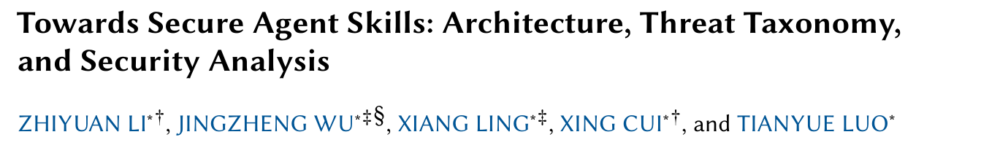
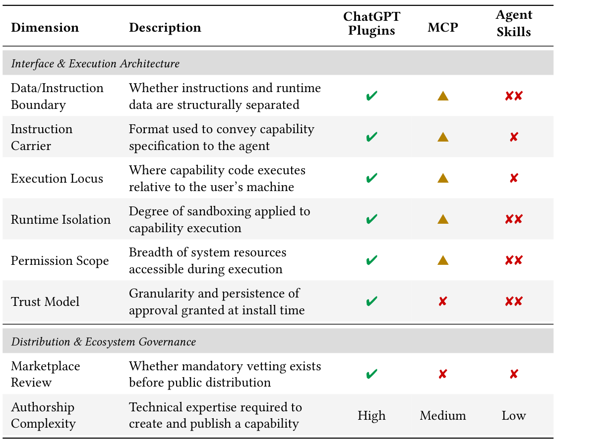
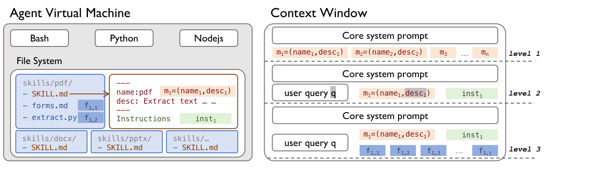
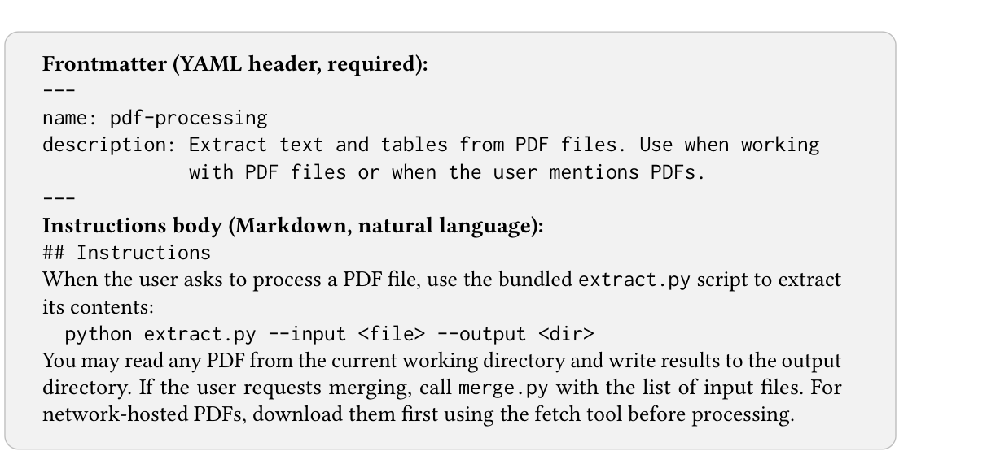
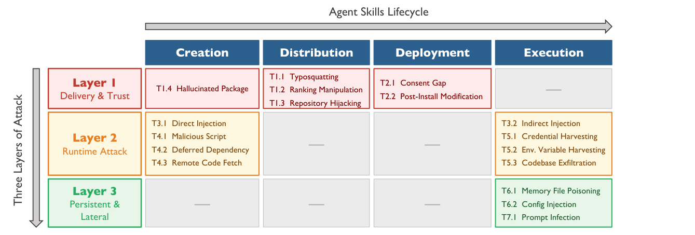

本文看点
01
三代扩展机制同表对比
02
结构性硬伤而非普通bug
03
7类17场景威胁地图
01
PAPER INFO
论文信息
【论文题目】Towards Secure Agent Skills: Architecture, Threat Taxonomy, and Security Analysis
【论文链接】https://arxiv.org/abs/2604.02837
【作者团队】中国科学院软件研究所（ISCAS）

— 论文题头
这篇来自中科院软件所，是一篇系统化梳理（SoK / vision）论文。它不做新工具、不跑大规模实验，而是回答一个更根上的问题：Agent Skill 频频出安全事故，到底是个别开发者不小心，还是这套机制打娘胎里就不安全？ 作者的答案很干脆：是设计出来的。因为是综述类文章，本文按它的框架逐层拆给你看。
02
OVERVIEW
导读
Agent Skill 是最近火起来的一种 Agent 能力扩展标准：把一段能力打包成一个文件夹，里面放一个 `SKILL.md`（自然语言说明 + 代码 + 脚本），Agent 按需加载、直接在你本地权限里执行。它比 ChatGPT Plugins、MCP 更"开箱即用"，也正因为如此，安全事故接二连三。
这篇 SoK 的贡献可以浓缩成三层递进：
第一层，把账算清。作者把 Agent Skill 和前两代扩展机制（ChatGPT Plugins、MCP）放进同一张安全维度对比表，一条一条打分，结论是 Agent Skill 在几乎每个安全维度上都是退化最严重的那个。
第二层，找出病根。表面上五花八门的攻击，背后其实是三个结构性缺陷：没有数据和指令的边界、一次安装就给出永久的操作员级授权、上架前没有强制审核。这些不是 bug，是设计假设。
第三层，画出地图并验证。作者用"生命周期 × 攻击层"两个维度，把 7 大类、17 种攻击场景全部归位，再拿 5 起真实事件（包括一次性污染了 1184 个技能的 ClawHavoc 大规模投毒）逐一映射，证明这张地图不是纸上谈兵。
03
REGRESSION
一张对比表：Agent Skill 是三代里退化最狠的
先看这篇最有说服力的一张图。作者把三代扩展机制放在八个安全维度上逐条对比（绿勾=安全，黄三角=部分暴露，红叉=暴露，双红叉=严重暴露）：

— 表1：三代 Agent 扩展机制的安全对比。ChatGPT Plugins 几乎全绿，MCP 居中，Agent Skills 在数据-指令边界、运行时隔离、权限范围、信任模型四项上都是双红叉（严重暴露），且创作门槛最低（Low），意味着供应链风险最高
这张表值得盯着看一会儿。ChatGPT Plugins 那一列几乎全绿：它把能力封装成远程 API，指令和数据分开、代码跑在服务商那边、有沙箱、上架要审核。MCP 居中，很多维度是黄三角。而 Agent Skills 这一列红成一片：
- 数据-指令边界：双红叉。`SKILL.md` 把"给 Agent 的指令"和"要处理的数据"混在同一段自然语言里，Agent 分不清哪句是命令、哪句是数据。
- 运行时隔离 / 权限范围：双红叉。技能里的脚本直接在你机器上、以你的完整权限跑，没有沙箱。
- 信任模型：双红叉。安装时点一次"同意"，就等于把操作员级的权限永久交出去了。
- 创作门槛：Low。写个 Agent Skill 几乎零技术门槛，门槛越低，恶意投稿越容易，供应链风险越高。
一句话：前两代踩过的坑，Agent Skill 为了"好用"几乎全都踩回来了。
04
ARCHITECTURE
架构：为什么它天生分不清指令和数据
要理解病根，得先看清 Agent Skill 到底怎么跑起来的。

— 图1：Agent Skill 的架构。左边是 Agent 虚拟机（带 Bash/Python/Nodejs 和文件系统，技能就是文件系统里的 skills/xxx/ 文件夹）；右边是上下文窗口的三级渐进披露：level 1 只加载技能的"名字+描述"，level 2 命中后把完整指令塞进上下文，level 3 再按需读取和执行打包的脚本文件
核心机制叫渐进披露（progressive disclosure），分三级：Agent 平时只看到每个技能的名字和一句描述（level 1）；当你的提问命中某个技能，它的完整 `SKILL.md` 指令被整段塞进上下文窗口（level 2）；真正干活时，再按需读取、执行技能文件夹里打包的脚本（level 3）。
一个 `SKILL.md` 长这样：

— 表2：SKILL.md 的结构。顶部是 YAML 元数据（name、description），下面是 Markdown 自然语言写的指令正文，正文里直接嵌着要执行的命令（如 python extract.py）和对其它脚本文件的引用
看出问题了吗？指令正文是自然语言，要执行的命令也写在这段自然语言里，要处理的外部数据将来还会进入同一个上下文窗口。 对 Agent 来说，这三样东西在同一个通道里、没有任何结构性的分隔。传统程序有"代码段"和"数据段"的硬边界，而 Agent Skill 把它们揉成了一团。这就是第一个结构性硬伤：没有数据-指令边界，直接导致提示注入在这里几乎无法根治。
更要命的是 level 3 那个脚本：脚本的源码根本不进上下文窗口，Agent 只看到脚本的"输出"。也就是说，一个技能声称自己是"GIF 转换器"，它偷偷下载勒索软件的那段代码，Agent 从头到尾都看不见，只能拿到一句"GIF 已生成"。
05
TAXONOMY
威胁地图：4 个阶段 × 3 个攻击层，7 类 17 种
把病根摊开后，作者用两个维度织成一张威胁全景图：横轴是技能的生命周期（创建 → 分发 → 部署 → 执行），纵轴是三个攻击层。

— 图2：Agent Skill 威胁分类学。横轴生命周期四阶段，纵轴三个攻击层：Layer 1 投递与信任（投毒、仿冒、刷榜、劫持仓库、同意鸿沟），Layer 2 运行时攻击（直接/间接注入、恶意脚本、延迟依赖、远程拉取、凭据与代码窃取），Layer 3 持久化与横向移动（记忆文件投毒、配置注入、提示感染），共 7 大类 17 种场景
这张图把散落的攻击手法全部归了位：
- Layer 1 投递与信任：攻击发生在你安装之前。仿冒命名（Typosquatting）、刷下载量排名、劫持合法仓库，再加上一个"同意鸿沟"：你点头同意的是"GIF 转换器"，实际授出去的是操作员级的全权。这就是第二个结构性硬伤：一次安装即永久授权，而且技能被安装后偷偷改内容（post-install modification），还继承着你当初那次授权，不需要重新弹窗。
- Layer 2 运行时攻击：技能跑起来之后作恶。直接注入（`SKILL.md` 里埋对抗指令）、间接注入（技能去拉的外部内容里带毒）、恶意脚本、延迟依赖、远程拉代码、窃取凭据和环境变量、外传整个代码库。
- Layer 3 持久化与横向移动：最阴的一层。往 Agent 的记忆文件、配置文件里投毒，或者用"提示感染"让污染在一次次会话之间传下去，你重启 Agent 也清不掉。
而所有这些能大规模发生，还有第三个结构性硬伤：上架前没有强制审核。技能商店"默认信任发布者"，任何人都能传，没有一道强制的发布前扫描。
06
INCIDENTS
五起真实事件：地图不是纸上谈兵
作者用 5 起已确认的真实事件给这张地图做了验证，每一起都精确落在某几个格子里：
其一，MedusaLocker 勒索软件技能（2025 年 12 月，Cato CTRL）：一个伪装成"GIF 图片转换"的技能，声明里不要任何高权限，装上激活后，打包脚本静默下载并运行了 MedusaLocker 勒索软件，加密你的文件系统，同时还给 Agent 返回一句正常的"GIF 已生成"。它同时命中 T4.1（恶意脚本）和 T2.1（同意鸿沟）：你授权的是转换器，拿到的是加密勒索。
其二，ClawHavoc 大规模投毒（2026 年 1 月，Koi Security & Antiy CERT）：针对 ClawHub 技能市场的协同供应链攻击，一次性污染了 1184 个技能，约占当时整个生态的五分之一。恶意技能投放 Atomic macOS Stealer 等窃密木马，收割 LLM API Key、SSH 私钥、浏览器密码和 60 多类加密货币钱包数据。手法是仿冒命名（T1.1）+ 机器人刷榜（T1.2）把恶意技能顶到搜索前排 + 收割凭据（T5.1）。
其三，Claude Code 的两个 CVE（2026 年 2 月，Check Point）：CVE-2025-59536（CVSS 8.7）证明恶意仓库能往 `.claude/settings.json` 注入 Hook，在 Agent 初始化时、任何信任弹窗出现之前就执行任意 shell 命令；CVE-2026-21852 则把 `ANTHROPIC_BASE_URL` 指向攻击者端点，把包含认证 token 的所有 API 流量整个引流走。都落在 T6.2（配置注入），后者还叠加 T5.1（凭据窃取）。
其四，SafeDep PEP 723 延迟依赖攻击（2026 年 1 月）：技能脚本声明了一个不固定版本的依赖，发布和审核时这个包还是良性甚至不存在的，攻击者事后往 PyPI 传一个恶意版本，之后每次运行技能，`uv run` 都会静默拉取最新版、把载荷送进来，技能自己一行代码都没改。它揭示了 Agent Skill 特有的时间维度攻击面：真正跑的代码不是安装时定的，而是运行时才拉的，中间是一段无限长的可投毒窗口。命中 T4.2（延迟依赖）。
其五，Mitiga 静默代码库外泄（2026 年 2 月，Breaking Skills 系列）：一个伪装成测试工具、靠刷量装出高信誉的技能，发布到大型技能目录 skills.sh。开发者一装一激活，它就静默读取并外传了整个项目代码库，全程只要 4 次交互，而且 `skill-audit.log` 审计日志一片空白，毫无痕迹。命中 T5.3（代码库外泄）+ T1.2（刷榜）。它暴露的是渐进披露那个"按需读文件"的能力，本是为了效率，却天然成了一个数据外泄原语。
五起事件、三个攻击层，全部映射到同一批结构性根因。这正是作者想证明的：Agent Skill 的安全问题不是运气不好撞上了几个坏开发者，而是设计假设的必然产物。
07
TAKEAWAYS
启发与点评
对研究者：这篇 SoK 最大的方法论价值，是把"逐个数漏洞"升级成了"归因到结构"。它给了一个可复用的分析框架：先做同代际横向对比（Plugins vs MCP vs Agent Skills，看谁在哪个维度退化），再把攻击沿生命周期 × 攻击层归位，最后用真实事件验证分类学的完备性。这套框架不只适用于 Agent Skill，任何新的 Agent 扩展机制（下一个 MCP、下一个插件标准）都可以套进来先体检一遍。它提炼的三个结构性根因（无数据-指令边界、一次授权即永久信任、无强制审核）本质上是把 Agent 安全从"对抗某种具体攻击"抬到了"重新设计信任与隔离模型"的高度。真正要解决问题，得从架构层动刀：让指令和数据在结构上可分、让授权可细粒度可撤销、让上架必须过一道强制审查。
对从业者：三个能立刻用的判断。其一，装 Agent Skill 前先想清楚它要什么权限：同意鸿沟是结构性的，一个声称"转格式"的技能，你的同意可能覆盖了文件写入和网络下载的全部权限，来源不明的技能别装。其二，别信"删库"和"看代码"：脚本源码根本不进上下文，Agent 替你审不了；而 fork 和延迟依赖让"删掉源头"追不上传播，发现问题第一件事是轮换（rotate）凭据、不是删技能。其三，盯紧配置文件和依赖固定：`.claude/settings.json`、`.mcp.json`、`ANTHROPIC_BASE_URL` 这些配置项就是攻击面（CVE 已经证明），依赖务必 pin 死版本，别给"运行时才拉最新版"留窗口。
一点观察：把这篇和我们之前解读的 Agent Skill 安全系列连起来看，正好补上了最关键的一块拼图。之前那几篇是实证：扫出 157 个真恶意技能、测出 26% 的漏洞普遍率、揪出 73% 的凭据泄露来自一行日志。而这篇是理论：它告诉你为什么这些数字必然会出现。Agent 生态正在原地重演 NPM 走过的供应链老路（仿冒、刷榜、install 脚本式攻击、延迟依赖），但它比 NPM 更危险的地方在于，它还多了一个自然语言层：指令和数据在这一层彻底混同，让几十年的软件安全经验一夜之间打了折。守住 Agent 供应链，第一步就是把这篇点破的三条结构性红线，当成设计 red line 来对待。